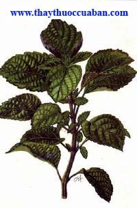

Chế độ ăn uống cho người bị cảm cúm
Chế độ ăn uống cho người bị cảm cúm
 Khỏi dứt điểm bệnh cảm cúm không dùng thuốc
Khỏi dứt điểm bệnh cảm cúm không dùng thuốc
Tên khác:
Vị thuốc Hoắc hương Lá đậu gọi là Hoắc, lá cây này giống lá Đậu mà có khí thơm nên gọi là Hoắc hương (Trung Quốc Dược Học Đại Từ Điển).
Tên Hán Việt: Hợp hương, Tô hợp hương, Hoắc khử bệnh, Linh lung hoắc khử bệnh (Hòa Hán Dược Khảo), Đầu lâu bà hương (Lăng Nghiêm Kinh) Đa ma la bạt hương (Pháp Hoa Kinh) Bát đát la hương (Kim Quang Minh Kinh), Gia toán hương (Niết Bàn Kinh), Quảng hoắc hương, Quảng hoắc ngạnh, Tiên hoắc hương, Thổ hoắc hương (Trung Quốc Dược Học Đại Từ Điển), Thổ Hoắc hương (Trấn Nam Bản Thảo),Thanh kinh Bạc hà (Qủang Tây Bản Thảo Tuyển Biên), Miêu vĩ ba hương, Miêu ba hổ (Liễu Ninh Thảo Dược), Lục hà hà (Phúc Kiến Dược Vật Chí), Ngư hương, Kê tô, Thủy ma diệp (Tứ Xuyên Trung Dược),

Tên khoa học: Pogos cablin (Blanco) Benth.
Họ khoa học: Họ Hoa Môi (Lamiaceae).
Cây hoắc hương
(Mô tả, hình ảnh cây hoắc hương, thu hái, chế biến, thành phần hóa học, tác dụng dược lý...)
Mô tả:
Cây hoắc hương là cây thuốc nam quý, cây nhỏ sống lâu năm, thân vuông màu nâu tím, mọc thẳng có phân nhánh, cao chừng 30-60, thân có lông. Lá mọc đối có cuống ngắn, vỏ có mùi thơm. Phiến lá hình trứng, mép có răng cưa to, hai mặt đều mang lông, mặt dưới nhiều lông hơn, lá dài 5-10cm, rộng 2,5-7cm. Cụm hoa mọc thành xim co, ở kẽ lá hay ngọn cành, hoa màu tím nhạt. Quả bế có hạt cứng. Toàn câycó lông và mùi thơm. Cây được trồng bằng hạt hoặc bằng cành dâm cành vào mùa xuân. Thu hái quanh năm trước khi ra hoa, rửa sạch, phơi khô.
Thu hái, sơ chế:
Thường thu hái vào tháng 4-6, phơi trong râm cho khô, hoặc sấy nhẹ cho tới khi khô.
Phần dùng làm thuốc:
Lá khô hoặc phần nằm trên mặt đất (Herba Pogostemi). Lựa thứ nguyên vẹn, lá dùng mềm, mùi thơm nồng là tốt.
Mô tả dược liệu:
Lá có cuống, mọc đối, phiến lá mầu lục tro hoặc lục vàng, thường bị vụn nát, nhăn nheo. Lá nguyên vẹn đủ thì hình tròn trứng, dài 6,6 - 10câm, mép có răng cưa, hai mặt đều mọc nhiều lông nhung, chất mềm mà dầy. Mùi thơm, vị hơi đắng, cay .
Phân biệt cây hoắc hương
1- Phân biệt với cây Thổ hoắc hương hoặc Xuyên hoắc hương có tên khoa học Agastacherugosa (fisch etmey) O. Ktze, thuộc họ Lamiaceae là một thứ cây thảo sống hàng năm, cao chừng 0,4-1m. Lá hình gần như tam giác, răng cưa nhỏ và mau hơn, dài 2-8cm, rộng 1-5cm đầu lá nhọn, gốc lá hơi hình tim. Cuống dài 1-4cm. Hoa mọc thành vòng quanh thân, ở ngọn cành hay kẽ lá, cánh hoa màu tím hay màu trắng. Quả cứng nhỏ hình trứng ngược. Cây có mọc ở Sapa, Hoàng Liên Sơn, thường ngươøi ta thu hái toàn cây vào mùa hè, phơi âm can hoặc dùng tươi, có vị cay tính hơi ấm. Thường sắc 1-12g hoặc làm thang tể để trị đau đầu do trúng nắng, đầy tức ngực bụng, nôi mửa ỉa chảy, đàm thấp tích trệ, ăn uống kém.
2- Xem thêm cây Hoắc hương núi còn gọi là Tiá tô dại, có tên khoa học Hyptis suaveolens (l.) Poir.
3- Xem thêm cây Hoắc hương núi còn gọi là chè nội, có tên khoa học adenosma caeruleum R. Br, thuộc họ
Bào chế:
+ Lá khô đem thái nhỏ dùng trong thuốc thang hoặc tán bột nhỏ để làm hoàn tán (Trung Quốc Dược Học Đại Từ Điển).
+ Phun nước cho ngấm đều, thái phiến, phơi khô để dùng (Đông Dược Học Thiết Yếu).
Bảo quản:
Đậy kín, để nơi khô ráo.
Thành phần hóa học
Thành phần hóa học: Cây chứa tinh dầu (1,2%) mà thành phần chủ yếu là alcohol patchoulic (45%), patchoulen (50%) và một số thành phần khác như benzaldehyd, aldehyd cinnamic, eugenol, cadinen, sesquiterpen và epiguaipyridin.
Tác dụng dược lý:
+ Quảng Hoắc hương có tác dụng kháng khuẩn rộng. Nước sắc Hoắc hương có tác dụng ức chế các loại nấm gây bệnh: Leptospirosis, Tụ cầu khuẩn, trực khuẩn mủ xanh, Etero coli, trực khuẩn lỵ, liên cầu khuẩn tán huyết type A, Phế song cầu khuẩn, Rhinovirus. Thuốc còn có tác dụng chống thối (Trung Dược Học).
+ Tinh dầu Hoắc hương có khả năng làm tăng tiết dịch dạ dầy, tăng chức năng tiêu hóa (Trung Dược Học).
+ Cho uống nước sắc Hoắc hương rồi dùng X. Quang theo dõi túi mật, thấy Hoắc hương có tác dụng làm co túi mật (Trung Dược Đại Từ Điển).
Vị thuốc hoắc hương
(Công dụng, liều dùng, tính vị, quy kinh...)
Tính vị:
+ Tính hơi ôn (Biệt Lục).
+ Vị ngọt đắng (Trân Châu Nang).
+ Vị cay, tính hơi ấm (Trung Quốc Dược Học Đại Từ Điển).
+ Vị cay, tính hơi ôn (Đông Dược Học Thiết Yếu).
Quy kinh:
+ Vào kinh thủ Thái âm Phế, túc thái âm Tỳ (Thang Dịch Bản Thảo).
+ Vào kinh phế, Tỳ, Vị (Lôi Công Bào Chích Luận).
+ Vào kinh Tâm, Can, Phế (Bản Thảo Tái Tân).
+ Vào 3 kinh, Phế, Tỳ, Vị (Trung Quốc Dược Học Đại Từ Điển).
+ Vào kinh Phế, Tỳ, Vị (Đông Dược Học Thiết Yếu).
Tác dụng:
+ Khứ ác khí, liệu hoắc loạn, liệu phong thủy độc thủng, chỉ thống (Biệt Lục).
+ Bổ vệ khí, ích Vị khí, tiến ẩm thực (Trân Châu Nang).
+ Ôn trung, khoái khí (Thang Dịch Bản Thảo).
+ Thăng thanh, giáng trọc, tránh uế, chỉ ẩu, hòa khí, hóa thấp, tỉnh tỳ, hoà vị (Trung Quốc Dược Học Đại Từ Điển).
+ Sơ tà, giải biểu, hành khí, hóa thấp, tiêu thực, hòa Vị, tránh uế (Đông Dược Học Thiết Yếu).
Chủ trị:
Là thuốc chủ yếu trị nôn nghịch do Tỳ Vị bệnh (Bản Thảo Đồ Kinh).
+ Trị thấp ở biểu, muốn nôn, nôn mửa (Trung Quốc Dược Học Đại Từ Điển)..
+ Trị cảm thử thấp, hàn nhiệt, đàu đau, ngực đầy, bụng đầy, nôn mửa, tiêu chảy, kiết lỵ, miệng hôi (Trung Dược Đại Từ Điển).
Liều lượng: 8 – 12g.
Ứng dụng lâm sàng của vị thuốc hoắc hương
Trị nội thương sinh lạnh và ngoại cảm thương hàn trong mùa hè, xuất hiện đau đầu sốt lạnh, tức ngực, bụng đầy, tiêu chảy:
Hoắc hương 12g, Đại phúc bì 12g, Bạch chỉ 8g, Phục linh 12g, Tửtô 8g, Trần bì 6g, Hậu phác 8g, Cát cánh 8g, Khương bán hạ 12g, Cam thảo 4g, Sinh khương 8g, Đại táo 12g. Sắc uống (Hoắc Hương Chính Khí Tán – Hòa Tễ Cục phương)
Trị hoắc loạn thổ tả gần chết, uống vào thì có thể sống lại:
Hoắc hương diệp, Trần bì, mỗi vị 20g, cho vào 2 bát nước, sắc lấy 1 bát uống lúc nóng (Bách Nhất Tuyển phương).
Trị cảm nắng, thổ tả:
Hoạt thạch (sao) 80g, Hoắc hương 8g, Định hương 2g. Tán bột, mỗi lần uống 8g với nước vo gạo (Vũ Giảng Sư, Kinh Nghiệm phương).
Trị thai động không yên, khí không lên xuống, nôn ra nước chua:
Hương phụ, Hoắc hương, Cam thảo mỗi vị 8g, tán bột. Mỗi lần dùng 4g, thêm ít muối vào, uống với nước sôi (Thánh Huệ phương).
Trị miệng hôi:
Sắc lấy nước Hoắc hương súc miệng thường xuyên (Trích Huyền phương).
Trị xông pha nơi có nhiều sương mù, sinh ra lở loét:
Hoắc hương, Tế trà, hai vị bằng nhau, đốt thành tro, trộn với dầu, để trên lá, đắp vào nơi đau (Ứng Hiệu phương).
Trị hoắc loạn:
Hoắc hương, Súc sa mật, Sao diêm [muối rang] (Trung Quốc Dược Học Đại Từ Điển).
Trị hoắc loạn, thổ tả, vọp bẻ:
Hoắc hương, Nhân sâm, Quật bì, Mộc qua, Phục linh, Súc sa mật (Trung Quốc Dược Học Đại Từ Điển).
Trị trúng phải khí ác, đau bụng như thắt:
Hoắc hương, Mộc hương, Trầm thủy hương, Nhũ hương, Súc sa mật (Trung Quốc Dược Học Đại Từ Điển).
Trị tự nhiên trúng phải hàn tà, nôn nghịch liên tục:
Hoắc hương, Mộc hương, Đinh hương, Tử tô diệp, Nhân sâm, Sinh khương (Trung Quốc Dược Học Đại Từ Điển).
Trị thương thử vào mùa hè thu, ngực tức, chóng mặt, muốn nôn, trong miệng nhớt dẻo, không muốn ăn uống:
Hoắc hương, Bội lan, mỗi thứ12g. Sắc uống (Lâm Sàng Thường Dụng Trung Dược Thủ Sách).
Trị ho, hàn thấp trở trệ bên trong, vị khí mất chức năng giáng xuống, bụng đầy tức, ăn ít, nôn mửa:
Hoắc hương diệp 12g, Bán hạ (chế) 12g, Đinh hương 2g, Trần bì 12g, sắc uống (Hoắc Hương Bán Hạ Thang - Lâm Sàng Thường Dụng Trung Dược Thủ Sách).
Trị viêm trường vị cấp tính thuộc hàn thấp:
Hoắc hương, Bán hạ (chế), mỗi thứ 12g, Thương truật, Trần bì, mỗi thứ 8g. Sắc uống (Lâm Sàng Thường Dụng Trung Dược Thủ Sách).
Trị đầy tức bụng và vùng vị quản, nôn mửa không muốn ăn:
Hoắc hương diệp 12g, Trần bì 6g, Đảng sâm 12g, Bán hạ 6g, Xích phục linh 12g, Thương truật 12g, Hậu phác 12g, Cam thảo 4g, Sinh khương 3 lát. Sắc uống nóng (Hoắc Hương Ẩm - Lâm Sàng Thường Dụng Trung Dược Thủ Sách).
Trị tỳ vị khí trệ, bụng đầy, vùng trung quản đầy:
Hoắc hương 12g, Sa nhân 6g, Hậu phác 12g, Trần bì 4g, Thanh mộc hương 12g, Chỉ thực 12g. Sắc uống (Lâm Sàng Thường Dụng Trung Dược Thủ Sách).
Trị mũi viêm mạn tính:
Dùng Hoắc hương 160g, tán bột, trộn mật heo làm viên. Mỗi lần uống 4g với nước, ngày 2 lần, liên tục 2-4 tuần (Lâm Sàng Thường Dụng Trung Dược Thủ Sách).
Tham khảo:
So sánh hoắc hương với các vị thuốc khác
+ Hoắc hương có mùi thơm giúp tỳ vị, nên chữa được bệnh ẩu nghịch, làm cho ăn uống thêm lên (Dụng Dược Pháp Tượng).
+ Sách “Quảng Chí” ghi rằng Hoắc hương cành vuông có từng mắt, trong rỗng, lá hơi giống lá cà, Khiết cổ, Đông Viên chỉ dùng lá, nay họ dùng cả cành nữa. Sách sử đời nhà Đường ghi:” Xứ Đốn Tổn thổ sản Hoắc hương, trồng cành cũng sống được, như lá Đô lương”. Sách ‘Giao Châu Ký’ của Lưu Huân có chép: “Hoắc hương giống Tô hợp hương, đó là nói về mùi thơm, chứ không phải nói về hình dạng” (Bản Thảo Cương Mục).
+ Hoắc hương vào kinh Phế, vì thế ngày xưa dùng để chữa bệnh tỵ uyên (mũi viêm dị ứng), nghĩa là hay dẫn khí thanh dương đi lên tới đỉnh đầu (Thẩm Thị Tôn Sinh Thư).
+ Hoắc hương tuy không táo nhiệt lắm, nhưng nói cho đúng cốt dùng tại mùi thơm, bệnh mà trong miệng có mùi hôi, uống vàorất hay, nếu lưỡi ráo, tân dịch thông nhuận thì không nên dùng. Phàm những vị thuốc có mùi thơm đều một lối như thể cả, chẳng những Hoắc hương mà thôi (Y Học Nhất Đắc).
+ Quảng Hoắc hương mùi thơm tương dối đậm, tính táo, vì vậy nó thiên về tán thấp. Tiên Hoắc hương có mùi thơm nhẹ hơn, không táo, thiên về hóa thấp (Đông Dược Học Thiết Yếu).
+ Hoắc hương và Tô tử có tính vị và công dụng cách chung là giống nhau. Tuy nhiên, Tử tô mầu tía, thường đi vào phần huyết. Hoắc hương thơm hơn Tử tô, có tác dụng lý khí hay hơn, nhưng sức hành huyết thì không bằng Tử tô. Tử tô có tác dụng tuyên thông Phế khí mà phát hãn, giải biểu mạnh, hiệu lực của Hoắc hương là kích thích Vị khí, tránh uếu khí mạnh (Đông Dược Học Thiết Yếu).
Kiêng kỵ:
+ Hoắc hương vị thơm, tính táo, dễ làm tổnâm, hao khí, âm hư không có thấp và vị hư gây nên nôn: kỵ dùng (Trung Quốc Dược Học Đại Từ Điển).
+ Âm hư, không có thấp, Vị có uất nhiệt: khong dùng (Đông Dược Học Thiết Yếu).
Nơi mua bán vị thuốc Hoắc Hương đạt chất lượng ở đâu?
Trước thực trạng thuốc đông dược kém chất lượng, nguồn gốc không rõ ràng,... xuất hiện tràn lan trên thị trường, làm ảnh hưởng tới hiệu quả điều trị cũng như ảnh hưởng tới sức khỏe của bệnh nhân. Việc lựa chọn những địa chỉ uy tín để mua thuốc đông dược là rất quan trọng và cần thiết. Vậy khách hàng có thể mua vị thuốc Hoắc Hương ở đâu?
Hoắc Hương là vị thuốc nam quý, được sử dụng rộng rãi trong YHCT. Hiện tại hầu hết các cửa hàng thuốc đông dược, phòng khám đông y, phòng chẩn trị YHCT... đều có bán vị thuốc này. Tuy nhiên người mua nên chọn những địa chỉ có uy tín, đảm bảo chất lượng, có giấy phép hoạt động để mua được vị thuốc đạt chất lượng.
Với mong muốn bệnh nhân được sử dụng những loại dược liệu đúng, chất lượng tốt, phòng khám Đông y Nguyễn Hữu Toàn không chỉ là đia chỉ khám chữa bệnh tin cậy, uy tín chất lượng mà còn cung cấp cho khách hàng những vị thuốc đông y (thuốc nam, thuốc bắc) đúng, chuẩn, đạt chuẩn chất lượng. Các vị thuốc có trong tiêu chuẩn Dược điển Việt Nam đều được nghành y tế kiểm nghiệm đạt chất lượng tiêu chuẩn.
Vị thuốc Hoắc Hương được bán tại Phòng khám là thuốc đã được bào chế theo Tiêu chuẩn NHT.
Giá bán vị thuốc Hoắc Hương tại Phòng khám Đông y Nguyễn Hữu Toàn: Gọi 18006834 để biết chi tiết
Tùy theo thời điểm giá bán có thể thay đổi.
+ Khách hàng có thể mua trực tiếp tại địa chỉ phòng khám: Cơ sở 1: Số 481 lô 22 Lê Hồng Phong, Phường Gia Viên, Thành phố Hải Phòng
+ Mua trực tuyến: Thuốc được chuyển qua đường bưu điện. Khi nhận được thuốc khách hàng thanh toán tiền COD.
Tag: cay Hoac huong, vi thuoc Hoac huong, cong dung Hoac huong, Hinh anh cay Hoac huong, Tac dung Hoac huong, Thuoc nam
Thaythuoccuaban.com Tổng hợp
*************************